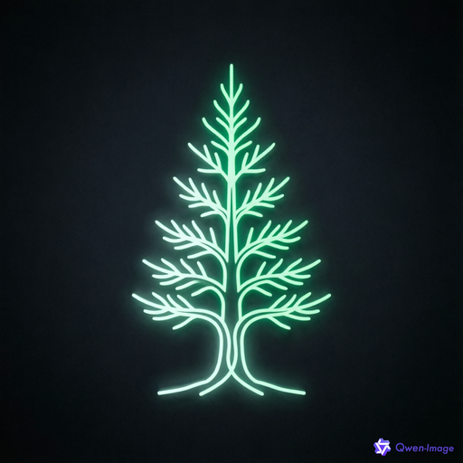

全部为假数据：聊天屏自动循环演示流式回复；屏 2 可演示工作区切换；每屏下方的小胶囊可切换状态预览（离线 / 配对错误 / 重连等）。

用手机远程控制你的桌面 aide
{
"file_path": "src-tauri/src/remote/protocol.rs"
}已读取 214 行
{ "pattern": "ChatEvent", "output_mode": "files_with_matches" }protocol.rs handler.rs useChatSession.ts
{ "command": "pnpm --prefix remote-pwa test protocol" }ERR_PNPM_RECURSIVE_FAIL remote-pwa 目录不存在